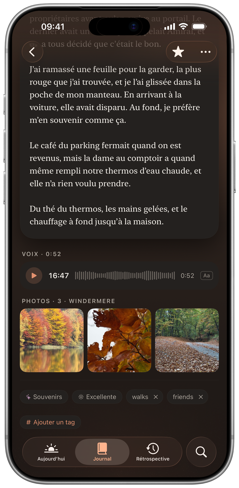
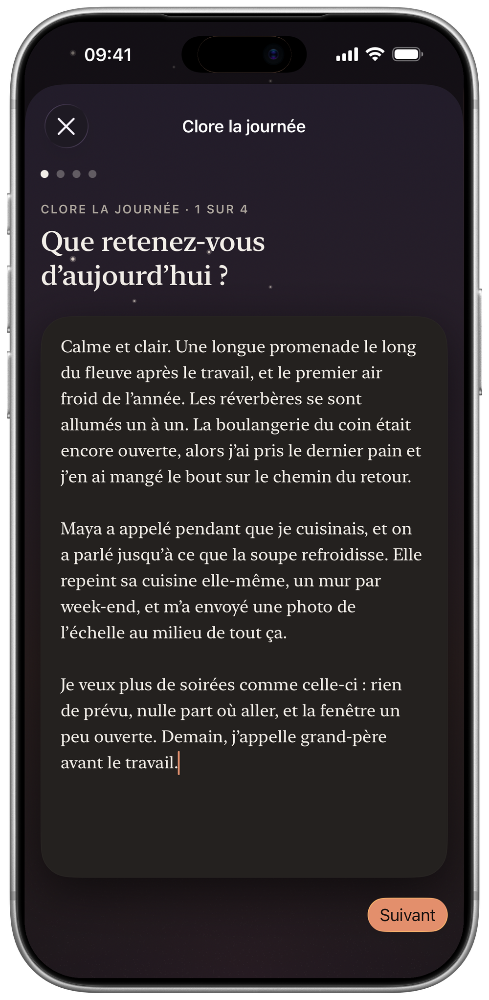
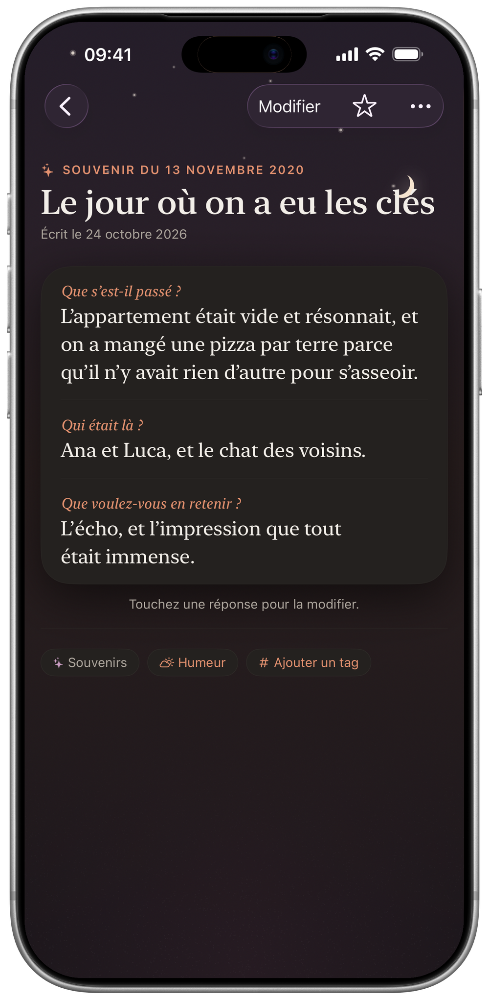
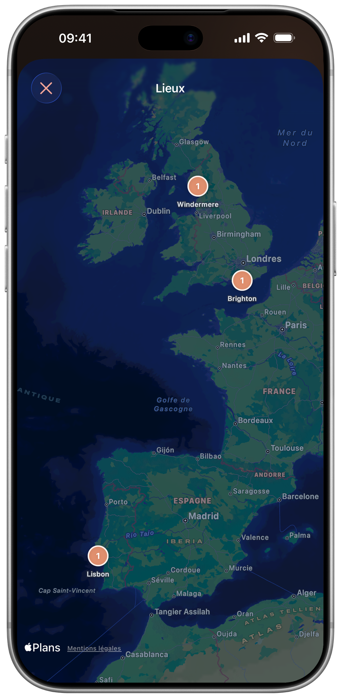
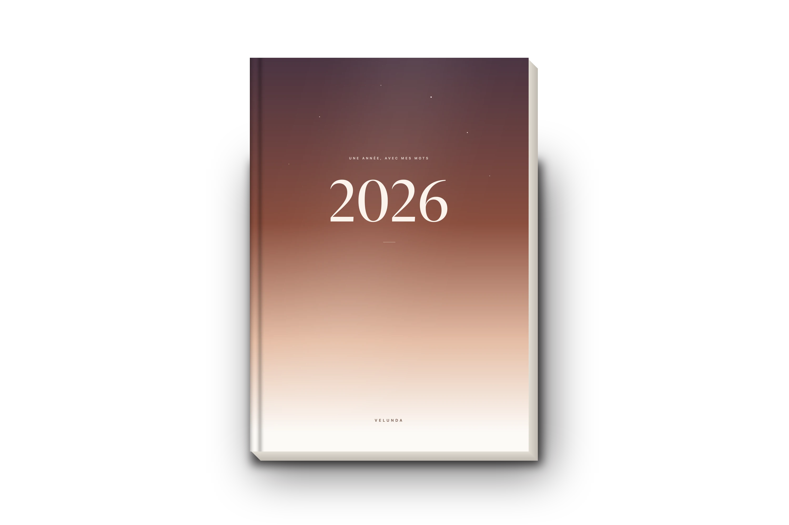
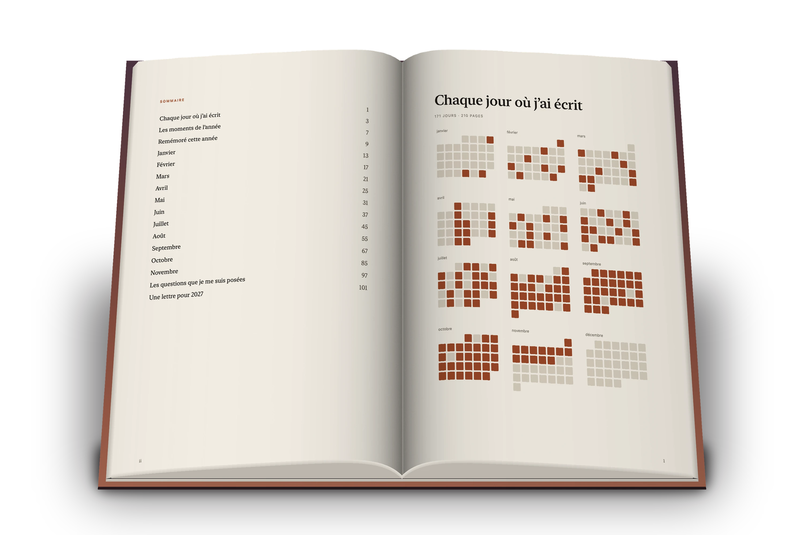
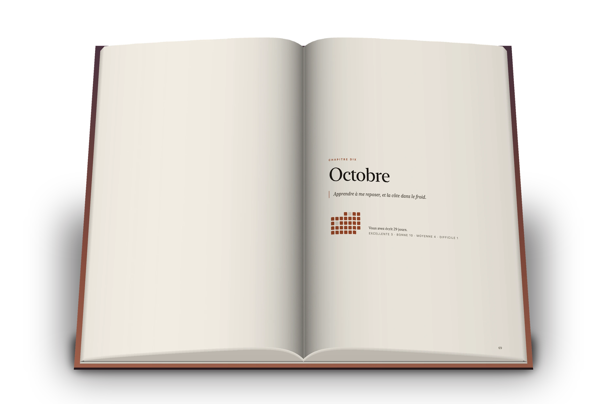
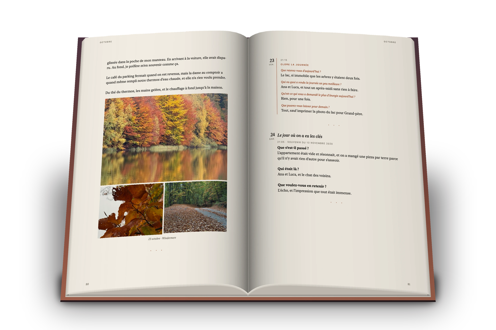
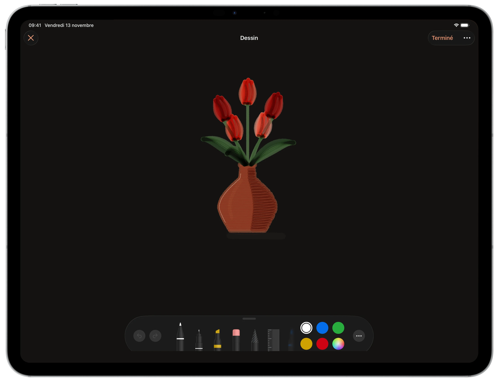
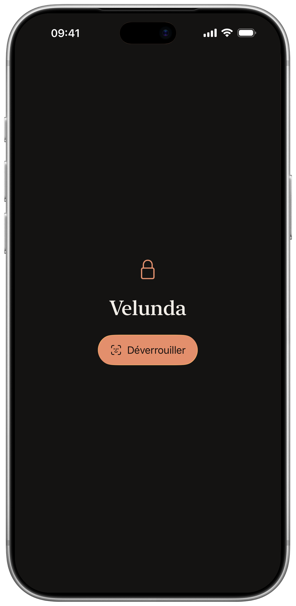

Pas de comptePas de pubPas de suiviPas d’IAPas d’abonnementPas de séries à tenir
Une journée avec Velunda
Quelques minutes par jour, gardées pendant des années.
Chaque matin, une question pour commencer, et une autre si elle ne vous parle pas. Des modèles vous accompagnent le matin, le soir, les jours difficiles et face aux grandes décisions : il y a toujours un point de départ.
À tout momentMots, photos, voix
Écrivez-le, montrez-le, ou dites-le simplement.
Ajoutez jusqu’à dix photos à une page, et Velunda note la ville où chacune a été prise. Pas le temps d’écrire ? Lancez un enregistrement, et Velunda peut transcrire ce que vous avez dit, directement sur votre appareil.

Le soir21 h 15
Laissez filer la journée.
Quatre courtes questions avant de dormir, et libre à vous de passer celles que vous voulez. Un mot ou une page : dans tous les cas, la journée est gardée.

Des années plus tardLe même jour
Le passé revient de lui-même.
Notez un souvenir avec le jour où il a vraiment eu lieu : votre premier appartement, un été d’il y a longtemps. Chaque année, à cette date, Velunda vous le rappelle.

RétrospectiveChaque voyage, chaque ville
Tous vos voyages sur une seule carte.
Lieux rassemble vos pages ville par ville. Touchez un repère, et vous voilà de retour sur cette plage, dans cette rue, au bord de ce lac.

À la fin de l’année
Votre année, en vrai livre.
Velunda réunit tout ce que vous avez écrit, photographié et dessiné dans un livre à imprimer, à relier et à ranger dans votre bibliothèque. Faites défiler pour le feuilleter.
La couverture
Votre titre, votre nom.
Une couverture aux couleurs du matin ou du crépuscule, avec le titre que vous donnez à votre année. Et une dédicace, si vous le souhaitez.

Les premières pages
Chaque jour écrit, d’un seul coup d’œil.
Le livre s’ouvre sur la table des matières et le calendrier de toute l’année : un carré pour chaque jour où vous avez écrit.

À l’intérieur
Un chapitre pour chaque mois.
Chacun s’ouvre sur une phrase de vous et sur l’humeur du mois, puis viennent tous les jours où vous avez écrit et chaque soir où vous avez clos la journée.

Vos photos
Les images, là où elles ont leur place.
Les photos accompagnent les mots auxquels elles appartiennent, avec le jour et la ville en dessous. Créé sur votre appareil, jamais envoyé nulle part.

iPad et Apple Pencil
De la place pour écrire. Et pour dessiner.
Sur iPad, la page a de la place pour respirer. Et les jours où les mots ne viennent pas, prenez l’Apple Pencil : le dessin reste avec la page et rejoint votre livre.

Privé par nature
Vos pensées ne regardent que vous.
Velunda n’a ni compte ni serveur propre. Il ne recueille rien, et tout ce que vous écrivez est chiffré de bout en bout.

Protégé par Face ID
Ou par Touch ID, ou par votre code. Les widgets et les rappels ne montrent jamais ce que vous avez écrit.
Chiffré, sur tous vos appareils
Votre journal se synchronise via votre propre iCloud, pour que l’iPhone et l’iPad restent à jour. Chaque mot, chaque photo et chaque enregistrement est chiffré.
Votre voix reste à vous
Les enregistrements sont transcrits sur votre appareil. L’audio n’est jamais envoyé à personne.
Toujours à vous
Exportez une sauvegarde complète, du Markdown ou un PDF quand vous le souhaitez, photos et enregistrements compris.
Prix
Essayez tout gratuitement. Puis payez une seule fois.
Votre première semaine
Gratuit, tout compris.
Sept jours avec toutes les fonctions, dès la première page. Aucune inscription.
Ensuite
À vous pour de bon.
Un seul achat, sans abonnement. Avec le Partage familial, votre famille en profite aussi. Et quoi que vous décidiez, chaque page écrite reste à vous : à relire, à rechercher et à exporter.
Quelqu’un d’autre peut-il lire mon journal ?
Non. Velunda n’a ni compte ni serveur propre. Votre journal reste sur vos appareils et dans votre iCloud privé, où tout ce que vous écrivez est chiffré de bout en bout.
Que se passe-t-il après la semaine gratuite ?
Pour écrire et modifier, il faut l’achat unique. Tout ce que vous avez déjà écrit reste lisible, consultable et exportable, que vous l’achetiez ou non.
La synchronisation fonctionne-t-elle entre iPhone et iPad ?
Oui, via iCloud, quand les deux appareils utilisent le même compte Apple.
Mes photos et mes enregistrements sont-ils envoyés quelque part ?
Seulement dans votre propre iCloud, chiffrés, si vous l’utilisez. Les enregistrements sont transcrits sur votre appareil, et l’audio ne le quitte jamais autrement. Pour indiquer la ville où une photo a été prise, Velunda demande sa position à Plans d’Apple et ne garde que la ville ; vous pouvez désactiver cette option dans les Réglages.
Puis-je emporter mon journal ?
Oui. Vous pouvez exporter une sauvegarde à réimporter, des fichiers Markdown avec vos photos et vos enregistrements, un PDF, ou les trois dans une seule archive.
Dans quelles langues est-il disponible ?
Français, anglais, italien, espagnol et allemand.